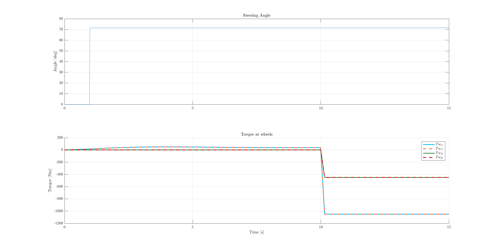
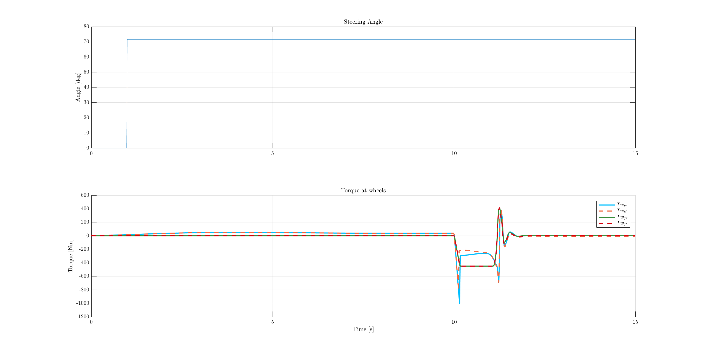
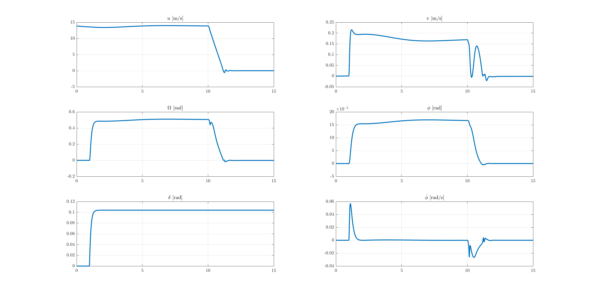
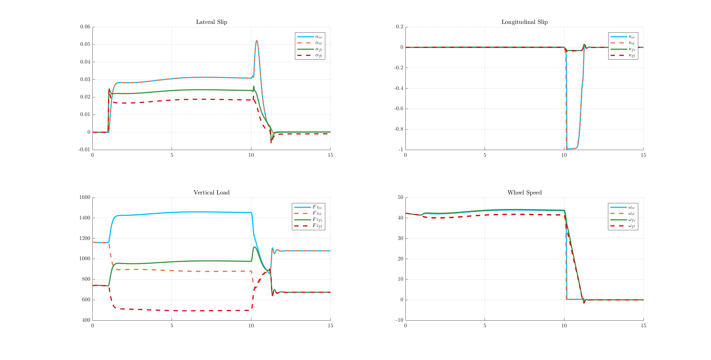
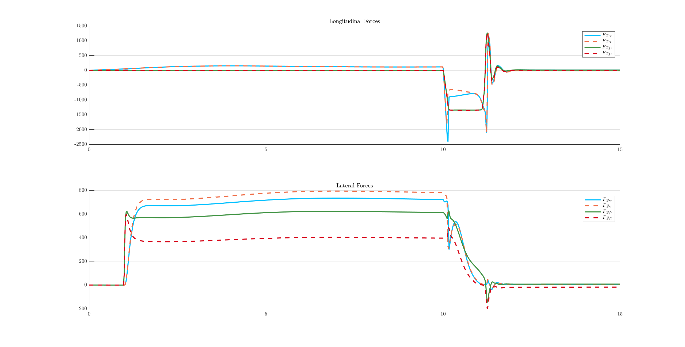
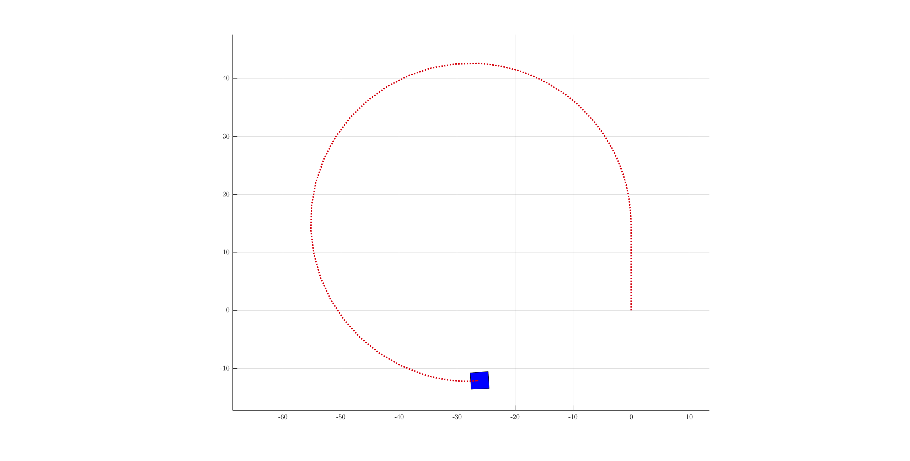
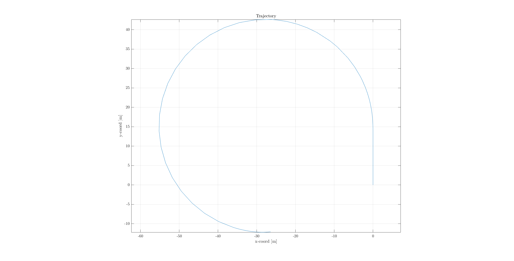

Contents
Main script Vehicle Model
% ~~~~~~~~~~~~~~~~~~~~~~~~~~~~~~~~~~~~~~~~~~~~~~~~~~~ % % Authors: Francesco Biral: francesco.biral@unitn.it % % & % % Luca De Pascali: luca.depascali@unitn.it % % % % Last release: June, 9th 2017 % % ~~~~~~~~~~~~~~~~~~~~~~~~~~~~~~~~~~~~~~~~~~~~~~~~~~~ % % This script initializes the parameters and starts the simulation of the % Simulink model 'FullVehicleModel_ABS_ESP.slx'. The model simulates the % dynamics of a full vehicle model, namely: % - longitudinal speed (u) % - lateral speed (v) % - yaw rate (Omega) % - roll angle and roll rate (phi and phi_dot) % - wheel lateral slip (alpha_i), i = rr,rl,fr,fl % - wheel longitudinal slip (kappa_i) i = rr,rl,fr,fl % - wheel vertical load (Fz_i) i = rr,rl,fr,fl % - wheel angular speed (omega_i) i = rr,rl,fr,fl % The tire-road contact forces are computed with the Pacejka's magic % formula, whose coefficients and equations are contained in file % 'pacejka_model.m' % You need to put this script in a dedicated folder together with the % following files: % - 'FullVehicleModel_V3_sfun.m' % - 'FullVehicleModel_ABS_ESP.slx' % - 'low_speed_slip.m' % - 'pacejka_model.m' % - 'regSign.m' % - 'dataAnalysis.m' % - 'color.m'
Initialize
clear close all clc % Set LaTeX as default interpreter for axis labels, ticks and legends set(0,'defaulttextinterpreter','latex') set(groot, 'defaultAxesTickLabelInterpreter','latex'); set(groot, 'defaultLegendInterpreter','latex'); % Set defualt figure window as 'docked' set(0,'DefaultFigureWindowStyle','docked');
Select Maneuvre
In this section you can select one of the three maneuvers on which you are supposed to test the performances of your controllers:
% Start from different initial speed V_init and assess the performances of % your controller at different speeds V_init = 50; % [km/h] <------- Change Speed to assess your controller at different speed % ------------------- % % FULL BRAKE MANEUVER % % ------------------- % % This maneuver allows you to assess the performances of the ABS control: % the vehicle starts with initial speed V_init and at t_brake=3s the driver % pushes down the brake pedal commanding a full brake (and inducing wheel lock) % The aim of ABS control is that to reduce the stopping distance by acting % on the braking torque. You can choose to implement ABS for a % brake-by-wire system (brake torque continously varying) or for standard % Hydraulic Actuated Brakes (HAB), characterized by discrete dynamics. % % % % % % % % % % % % % % % % brake_maneuver_flag = false; % <------- Put this flag equal to true to select full brake maneuver % % % % % % % % % % % % % % % % % Simulation lasts t_f = 10s; if brake_maneuver_flag t_f = 7; % [s] t_brake = 3; % [s] maneuver_flag = 1; str = ' brake maneuver'; end % Start from different initial speed V_init and compute the braking time and % distance with and without ABS control % --------------------------- % % DOUBLE LANE CHANGE MANEUVER % % --------------------------- % % This maneuver allows you to assess the performances of the ESP control: % the vehicle starts with initial speed V_init and the driver keeps the % velocity constant and performs a double lane change maneuver at t=1s; % % % % % % % % % % % % % % % % % % % % dblLaneChange_maneuver_flag = false; % <------- Put this flag equal to true to select double lane change maneuver % % % % % % % % % % % % % % % % % % % % % Simulation lasts t_f = 10s; if dblLaneChange_maneuver_flag t_f = 5; % [s] t_brake = t_f+1; % No brake for this maneuvre maneuver_flag = 2; str = ' double lane change maneuver'; end if dblLaneChange_maneuver_flag && brake_maneuver_flag && ~ConstCornerANDBrake_maneuver_flag warning('Two maneuvers selected. The simulation will perform only Double Lane Change Maneuver.') end % Start from different initial speed V_init and report the improvements % obtained with your ESP controller % ------------------------------------- % % CONSTANT CORNERING AND BRAKE MANEUVER % % ------------------------------------- % % This maneuver allows you to assess the performances of the ESP and ABS % control: the vehicle performs a constant velocity cornering maneuver and % brakes while cornering after 10s % % % % % % % % % % % % % % % % % % % % % % ConstCornerANDBrake_maneuver_flag = true; % <------- Put this flag equal to true to select constant cornering and brake maneuver % % % % % % % % % % % % % % % % % % % % % % % Simulation lasts t_f = 10s; if ConstCornerANDBrake_maneuver_flag t_f = 15; % [s] t_brake = 10; % [s] maneuver_flag = 3; str = ' constant speed cornering and brake maneuver'; end if (dblLaneChange_maneuver_flag && brake_maneuver_flag && ConstCornerANDBrake_maneuver_flag) || (dblLaneChange_maneuver_flag && ConstCornerANDBrake_maneuver_flag) || (brake_maneuver_flag && ConstCornerANDBrake_maneuver_flag) warning('Two or more maneuvers selected. The simulation will perform only Cornering and Brake Maneuver.') end % Start from different initial speed V_init and report the improvements % obtained with your ESP controller
Start Simulation
fprintf(strcat('Starting Simulation for ',str,'...\n')) model_sim = sim('FullVehicleModel_ABS_ESP'); fprintf('Simulation completed\n')
Starting Simulation for constant speed cornering and brake maneuver... Simulation completed
Post-Processing
Plot of the interesting quantities for the evaluation of vehicle behavior
dataAnalysis;      